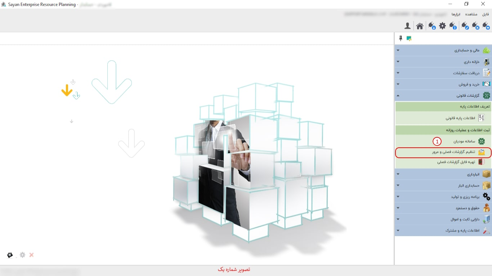

گزارش فصلی، یک گزارش کاری است که معمولاً توسط شرکتها، سازمانها و بسیاری از نهادها به منظور نمایش وضعیت کاری در یک بازه زمانی خاص، مثلاً یک فصل، تهیه میشود. گزارش فصلی شامل اطلاعات مختلفی است که نشان میدهد عملکرد یک شرکت، سازمان یا نهاد در طول یک فصل به چه صورت بوده است.
برای ادامه مطلب به تصویر شماره دو مراجعه نمایید.
-کادر شماره یک: در این بخش، میتوانید پارامترهای مورد نیازتان را فیلتر نمایید.
-کادر شماره دو: در این قسمت، میتوانید نوع عملیات خود را که شامل (خرید کالا و خدمات، فروش کالا و خدمات) است، انتخاب کنید.
نکته: هنگامی که عملیات خود را انتخاب کردید، میتوانید با زدن تیک ردیف، نوع عملیات خود را به صورت ردیف مشاهده نمایید.
-دریافت از اسناد (کادر شماره سه): در این آیتم، میتوانید فاکتورهایی را که ثبت کردهاید و همینطور آنها را در تعیین عملیات مشخص کردهاید، دریافت کنید.
-باز کردن (کادر شماره چهار): در این آیتم، میتوانید عملیات خود را که از اسناد دریافت کردهاید، از طریق این آیکون مشاهده کنید.
-خرید کالا و خدمات (کادر شماره پنج): با انتخاب این گزینه، صفحهای جدید برای شما باز خواهد شد که در آن میتوانید ردیفهای مربوط به عملیات خرید کالا و خدمات را ایجاد کنید یا در صورت استفاده از ماژول خرید و فروش، از طریق دریافت اسناد فاکتور خریدهای مربوط به گزارشهای فصلی خود را انتخاب و مدیریت کنید.
-فروش کالا و خدمات (کادر شماره شش): با انتخاب این گزینه، صفحهای جدید برای شما باز خواهد شد که در آن میتوانید ردیفهای مربوط به عملیات فروش کالا و خدمات را ایجاد کنید یا در صورت استفاده از ماژول خرید و فروش، از طریق دریافت اسناد، فاکتور خریدهای مربوط به گزارشهای فصلی خود را انتخاب و مدیریت کنید.
برای ادامه مطلب به تصویر شماره سه مراجعه نمایید.

-کادر شماره یک: در این بخش، میتوانید نوع عملیات خود را که به صورت ردیف انتخاب کردهاید، مشاهده نمایید.